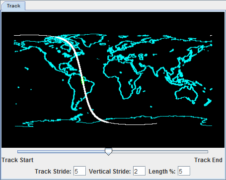

ProfileAlongTrack Controls
Overview
The ProfileAlongTrack display controls are used to display CALIPSO (Cloud-Aerosol Lidar and Infrared Pathfinder Satellite Observation), CloudSat, and HSRL2 (High Spectral Resolution Lidar 2) lidar data, including backscatter and reflectivity. These lidar files should be loaded through the General->Files/Directories chooser with the HYDRA data source Data Type. There are a variety of formats of these data. Below is a sample list of file names from each satellite/instrument that are currently supported:
- CALIPSO
- CAL_LID_L1-ValStage1-V3-30.2015-10-05T17-00-40ZD.hdf
- CAL_LID_L2_01kmCLay-ValStage1-V3-30.2015-10-05T17-00-40ZD.hdf
- CAL_LID_L2_333mCLay-ValStage1-V3-30.2015-10-05T17-00-40ZD.hdf
- CloudSat
- 2017263170336_60634_CS_2B-GEOPROF_GRANULE_P_R04_E06.hdf
- Note that this is the 94-GHz 2B-GEOPROF product
- HSRL2
- discoveraq-HSRL2_B200_20130904_R0_F2_.h5
Once the data source has been added to the Field Selector and a field has been selected, a Track subsetting tab will appear that allows for setting several options for the display of the data:

Image 1: ProfileAlongTrack subsetting tab
Track Subset Tab Properties
- Preview image - Plots the path of the track/orbit over a map. The portion of the track to be displayed is outlined in magenta.
- Slider - Defines the portion of the track to display. Moving this slider left or right will move the magenta-outlined part of the track closer to the beginning or ending of the track/orbit. The slider represents the middle of the displayed portion of the track with respect to Length %.
- Track Stride - Sets the horizontal stride (along the track) to display the data at. A value of 1 does not sample the data, thus displaying at the native resolution of the data. The higher the value, the more sampling of the data and the lower the resolution.
- Vertical Stride - Sets the vertical stride to display the data at. A value of 1 does not sample the data, thus displaying at the native resolution of the data. The higher the value, the more sampling of the data and the lower the resolution.
- Length % - Sets the length of the track/orbit to display. Increasing this value will plot more data long the track. A value of 100 will plot the entire track/orbit included in the file assuming that the slider (described above) is in the center.
Dependent on the field selected to be displayed, the Layer Controls tab of the Data Explorer may have only a Settings tab or tabs for both Settings and Display.
- Settings
- Color Table - Sets the enhancement to be applied to the display.
- Display
- Plots a graph where the x-axis represents the points along the track, and the y-axis is a physical parameter such as elevation. This tab will be available if Track2D or Track3D is the field selected to be displayed.